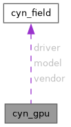

- Generated by
 1.15.0
1.15.0
|
libcyn
Read-Only Linux system information library
|
GPU information. More...
#include <cyn.h>

Data Fields | |
| cyn_field | vendor |
| cyn_field | model |
| cyn_field | driver |
GPU information.
| cyn_field cyn_gpu::driver |
The active kernel driver (e.g., "amdgpu", "nvidia").
| cyn_field cyn_gpu::model |
The PCI device ID (e.g., "0x2484") or resolved name.
| cyn_field cyn_gpu::vendor |
The PCI vendor ID (e.g., "0x10de") or resolved name.